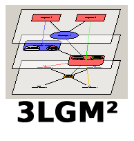

|
 |
The 3LGM² construction kit is being developed at the Institute for Medical Informatics, Statistics and Epidemiology (IMISE) at the University of Leipzig. The current version of the software is available at www.3lgm2.de. The authors assume no liability for possible errors and damage to software and hardware caused by the program! The copyright of the program remains with the University of Leipzig. Distribution, sale or other commercial use of the program is only allowed with the permission of the Institute of Medical Informatics, Statistics and Epidemiology (IMISE) of the University of Leipzig. For questions about the 3LGM² construction kit, please contact:
IMISE
Phone: (0341) 97 16100 The authors of the 3LGM² kit are:
|